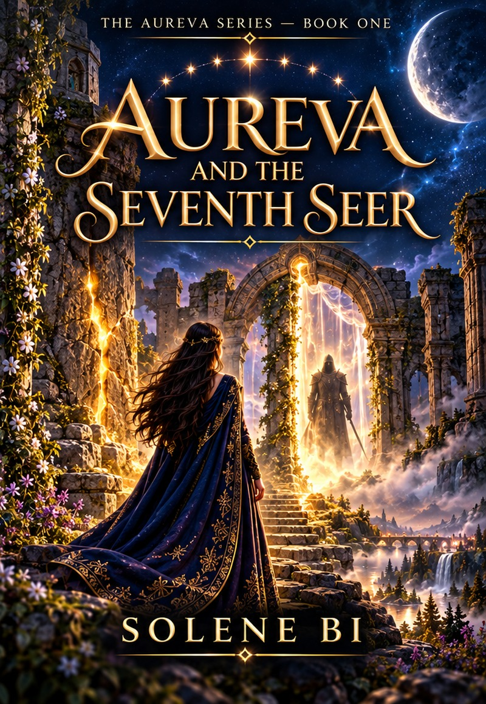

Aureva and the Seventh Seer
Book One

COMING NEXT · BY SOLENE BI
A five-book fantasy series of seers, doors and the prophecies that bind them. Aureva follows the Dandani Saga and is currently in development.
THE AUREVA SERIES
Book One
Book Two
Book Three
Book Four
Book Five